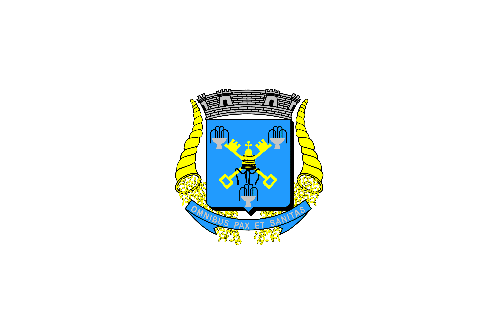

Unidos cantemos com fé e ardor Nossa terra saudemos Com este hino de amor
Tu tens a beleza das serras e os montes e tens a riqueza das tuas fontes
Tuas águas são verdes da cor da esperança teu céu azulado inspira confiança
Águas de São Pedro só tu entre mil és orgulho do Brasil
Nesta cadência de bons soldados em continência ao berço amado todos clamados a deus por ti
Águas de São Pedro só tu entre mil és o orgulho do Brasil.